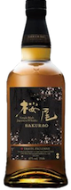
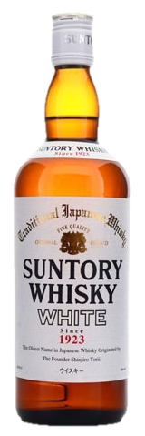
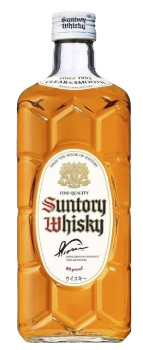
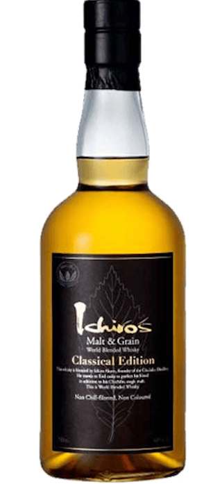
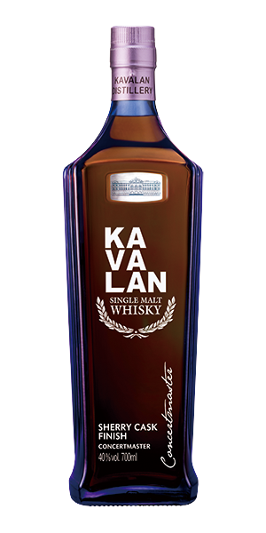
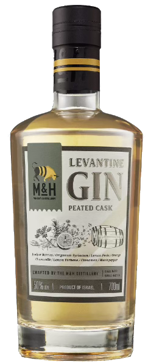

威士忌 WHISKEY
忍 純麥 水楢桶熟成
43%
$ 150 (15ml)
$ 250 (30ml)
$ 250 (30ml)
忍蒸餾所以其三項白色瑰寶——“雪” 、“米”、 “日本酒” ——孕育出忍威士忌，一款體現日本職人精神的傑作。宇佐美健(Usami Ken)大師以精湛的技藝，將麥芽威士忌原酒在雪莉與波本桶中陳年 3 年以上，最終在日本水楢木桶中完成它的熟成之旅。
静岡 UNITED S
50.5%
$ 250 (15ml)
$ 450 (30ml)
$ 450 (30ml)
United S 原料以日本大麥麥芽為核心，還有蘇格蘭非泥煤麥芽、泥煤麥芽、啤酒麥芽。分別在波本桶、四分之一波本桶、全新橡木桶中陳釀。嗅感中充滿了蜂蜜、奶油、香草的味道，然後是新鮮烤的麵包和一小撮泥煤的味道，穿過白色和黃色的水果味，最後是橡木味，還有煙熏和餡餅的味道。新鮮切下的花朵首先出現在舌頭上，然後餅乾、焦糖、新鮮烤堅果和香草奶油佔據主導地位。 餘韻非常美味，但又不會太重。
Nikka Frontier
48%
$ 100 (15ml)
$ 150 (30ml)
$ 150 (30ml)
Nikka威士忌創立90週年紀念品牌，旨在傳承創辦人竹鶴政孝的開拓精神。它是一款非冷凝過濾的調和威士忌，以余市蒸餾所的重泥煤麥芽原酒為核心，且麥芽威士忌比例超過51%。這款酒特色是帶來豐富的麥芽、宜人的煙燻風味、以及複雜且濃郁的香氣與口感體驗。
戶河內 泥煤桶
40%
$ 110 (15ml)
$ 200 (30ml)
$ 200 (30ml)
戶河內 PEATED CASK FINISH 是一款在具煙燻風味的威士忌桶中後熟的日本調和威士忌，帶有煙霧般的香氣與濃郁甜味。

櫻尾單一麥芽威士忌
43%
$ 250 (15ml)
$ 450 (30ml)
$ 450 (30ml)
櫻尾蒸餾所位於廣島縣的廿日市市，南臨瀨戶內海，北倚中國山地。蒸餾所內的櫻尾貯藏倉接收來自海洋的溫暖氣流與山間的冷冽氣流影響，形成顯著溫差，加速了威士忌的熟成。此外，貯藏庫臨海的地理位置，使熟成桶輕輕帶上瀨戶內海的海潮氣息，成為其獨特風味的一部分。

三得利白札調和威士忌
40%
$ 150 (15ml)
$ 250 (30ml)
$ 250 (30ml)
1923年，開始釀造日本第一支威士忌的鳥居進次郎在1929年推出了第一支國產威士忌。起初，品牌名稱只是“三得利威士忌”，但後來因為它的白標而被稱為“Shirofuda”。為此，它於1964年更名為現在的“白”。其特點是口感清爽，能感受到酒精的刺激，但不刺鼻，淡淡的果香讓人感覺溫和。

三得利白角瓶威士忌
40%
$ 150 (15ml)
$ 200 (30ml)
$ 200 (30ml)
以三得利Suntory白州蒸餾廠的清爽原酒調和而成，具有沉靜的香氣及純淨順口的味道，尾韻清冽為其特色。適合佐餐，尤其與味道細膩的日式料理非常相襯。

藏 日本威士忌
40%
$ 100 (15ml)
$ 180 (30ml)
$ 180 (30ml)
此威士忌口感滑順、不嗆口且清新淡雅，是在日本長野縣標高七九八公尺的深山幽谷裡，是所有日本海拔最高的釀酒廠所孕育出的威士忌，其特優水質是此酒品味美特色之一，因為沒有優美的水質是無法製造出高品質的威士忌，美味香醇最適合東方人口味。

秩父 黑葉
48%
$ 300 (15ml)
$ 400 (30ml)
$ 400 (30ml)
這款名為「Classical Edition 煙燻黑葉」的世界威士忌，仍然採用世界五大威士忌的原酒作為調和基礎，並加長在日本秩父蒸餾廠的熟成的時間，讓口感除了經典底蘊外更獲得進一步昇華。此款威士忌不僅運用了較高比的麥芽威士忌，多了一絲柔和的煙燻氣息，塑造出愉悅和諧的層次，藉由來自世界各地充滿個性的威士忌原酒，為這款威士忌譜出醇厚而華麗的風味，另外裝瓶方式採用非冷凝過濾、無焦染色，保留威士忌天然的複雜性。

Kavalan山川首席雪莉桶
40%
$ 250 (15ml)
$ 350 (30ml)
$ 350 (30ml)
噶瑪蘭特選多款二次風味桶，將酒液過桶至手工西班牙雪莉桶中熟成，完美結合精巧調和工藝與純熟過桶技術，整體風味細緻醇香、口感優雅柔順，散發著獨特芳郁果香與誘人甜香、乾果及堅果的細膩尾韻，呈現出層次分明且平衡馥郁的緻香酒款。

黎凡特泥煤桶陳琴酒
47%
$ 130 (15ml)
$ 260 (30ml)
$ 260 (30ml)
黎凡特地中海琴酒屬於 Distilled GIN, 完全採用奶與蜜蒸餾廠生產單一麥芽威士忌的原料(麥芽)和蒸餾器來生產, 所有材料經過浸泡48小時候再經過第三次蒸餾生產而成。本品項特別在來自蘇格蘭艾雷島的泥煤桶中熟成數月後才裝瓶。